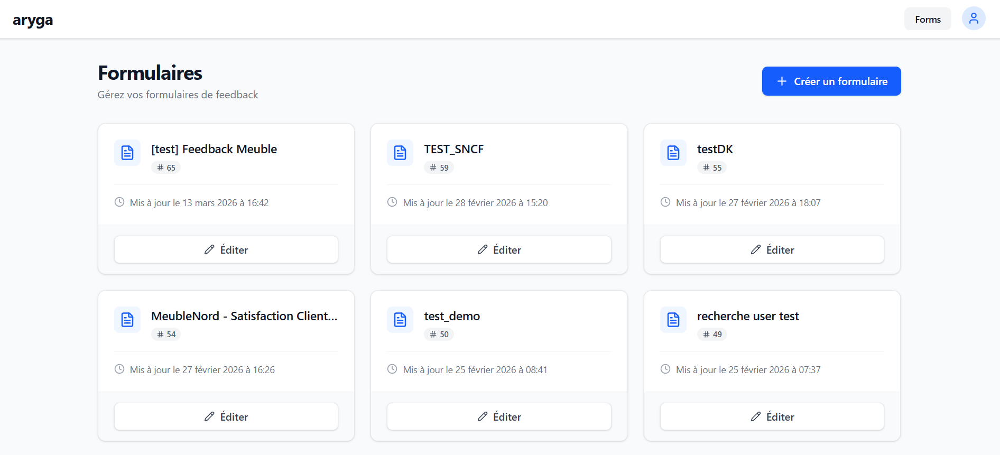
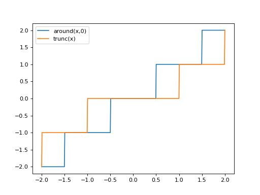
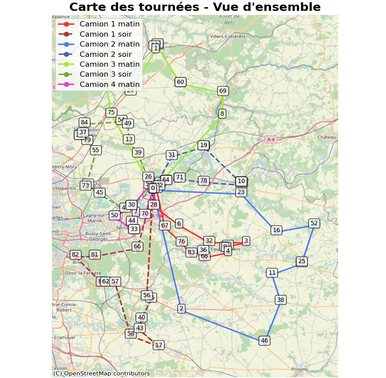
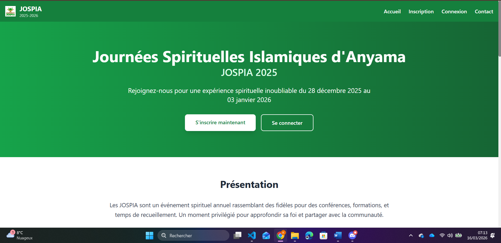

Colombo
Développer et maintenir un logiciel de diagnostic des machines d'imagerie dentaire.
Étudiant en Informatique passionné par la création d'applications web modernes, scalables et performantes. Spécialisé en JavaScript, React et Node.js.
Actuellement en BUT 3 Informatique à l'Université Gustave Eiffel, je suis un développeur passionné par la création d'expériences web de qualité. Mon parcours m'a permis de maîtriser les technologies modernes du web.
Devenir un développeur web senior capable de concevoir et déployer des applications scalables, en maîtrisant l'architecture frontend/backend et les bonnes pratiques de développement.
Master Développement Logiciel en alternance pour approfondir mes connaissances en architecture web, DevOps et leadership technique.
Projets complétés
Années d'expérience
Technologies maîtrisées
Développer et maintenir un logiciel de diagnostic des machines d'imagerie dentaire.

Developper une application du jeu Splendor en respectant ses regles et mecaniques.

Reconcevoir un jeu classique avec une jouabilite moderne en langage C.

Application web de generation de formulaires dynamiques et tableau de bord d'analyse avec integration Prestashop.

Projet academique d'analyse statistique avec collecte, traitement et visualisation de donnees.

Optimisation de tournees de livraison en Python et C avec algorithme genetique et generation de rapport PDF.

Mise en place d'une integration continue avec Jenkins pour automatiser builds, tests et livraison.

Application web de gestion des inscriptions et paiements pour un evenement associatif.
Carestream Dental - Alternance
Projets Indépendants | 1 an (2023-2024)
Création de 5+ sites web et applications pour des PME. Gestion complète des projets de la conception au déploiement en production.
Je suis ouvert aux opportunités de stage, projet et collaboration.